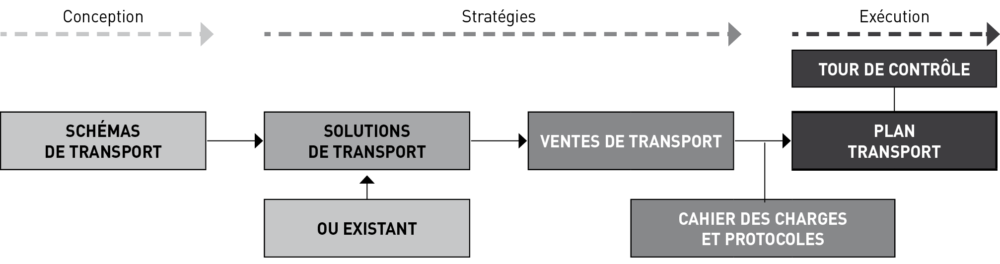
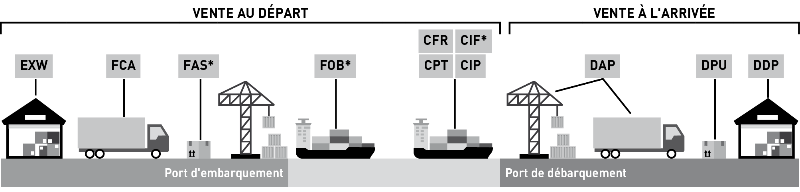

GESTION COMMERCIALE
H 2
Les forces d’une équipe commerciale dans une entreprise de transport routier de marchandises, opérant en France ou à l’international, reposent sur plusieurs piliers essentiels.
b Expertise sectorielle et technique :
– connaissance approfondie des réglementations en vigueur (France et international, comme les normes ADR pour les matières dangereuses) ;
– maîtrise des spécificités du TRM, telles que les contraintes logistiques, les types de véhicules, et la gestion des flux ;
– compétence dans l’utilisation des outils digitaux, tels que les plateformes de gestion logistique et les CRM spécialisés.
b Réseau et relations client :
– capacité à développer et maintenir un réseau solide de partenaires et de clients grâce à une approche personnalisée ;
– expérience dans la fidélisation des clients en identifiant leurs besoins spécifiques et en leur proposant des solutions adaptées ;
– relation de confiance bâtie sur la transparence et le respect des délais et engagements.
b Adaptabilité et réactivité :
– flexibilité pour répondre aux urgences et imprévus (pannes, retards, modifications des itinéraires) ;
– capacité à s’adapter rapidement aux fluctuations du marché, aux nouvelles réglementations et aux tendances de la demande, comme les attentes en matière de durabilité.
b Orientation vers les résultats :
– mise en place d’objectifs clairs pour optimiser la rentabilité des contrats tout en maintenant une haute satisfaction client ;
– aptitude à négocier des conditions avantageuses pour maximiser les marges tout en restant compétitifs.
b Connaissance des marchés locaux et internationaux :
– en France, la compréhension fine des spécificités régionales, des zones logistiques stratégiques et des contraintes routières locales ;
– à l’international, la familiarité avec les exigences douanières, les règles de cabotage, et les opportunités dans différents pays européens ou au-delà.
b Compétences linguistiques et interculturelles (pour l’international) :
– maîtrise des langues étrangères pour négocier et communiquer avec des clients et partenaires internationaux ;
– sensibilité aux différences culturelles, essentielles pour construire des relations de long terme et éviter les malentendus.
Une équipe commerciale performante dans le TRM se distingue par son professionnalisme, sa capacité à répondre aux besoins variés des clients, et son aptitude à s’adapter aux défis du marché national et international.
b Capacité à innover :
– proposer des services a valeur ajoutée, comme des solutions de transport multimodal ou des options éco-responsables (véhicules électriques, optimisation des trajets pour réduire l’empreinte carbone) ;
– pouvoir anticiper des besoins futurs grâce à une veille stratégique et concurrentielle.
b Esprit d’équipe et collaboration :
– coordination efficace avec les autres services de l’entreprise (opérations, logistique, comptabilité) pour garantir une expérience client fluide ;
– partage des bonnes pratiques et retour d’expérience au sein de l’équipe pour améliorer en continu les performances commerciales.
LA FONCTION COMMERCIALE DANS LE MARCHÉ DU TRANSPORT ROUTIER DE MARCHANDISES
1
GESTION COMMERCIALE
H 4
Techniquement, le transport routier est un process et non un produit.
En termes d’organisation, l’accomplissement de ce process se répartit entre deux régimes :
Le transport pour compte propre assuré en tant qu’activité accessoire par des entreprises agricoles, industrielles ou commerciales disposant de moyens humains et matériels de transport. On parle peu du transport routier pour compte propre, qui représente encore pourtant près de 25 % en tonnes-kilomètres transportées en France en 2021 par les véhicules de plus de 3,5 tonnes, ce qui fait des chargeurs des « transporteurs importants » et un vivier d’emploi du personnel de conduite. Ce mode d’organisation, malgré une lente érosion, reste pourtant très prisé par certains chargeurs, particulièrement pour les matériaux de construction, les denrées alimentaires, les produits agricoles et les produits manufacturés.
Le transport pour compte d’autrui assuré par des entreprises de transport routier spécialisées vendant un process et représentant aujourd’hui la plus large part du marché.
Comme nous l’avons déjà vu dans le guide, l’offre de transports pour compte d’autrui se compose en France de grandes entreprises nationales, de PME familiales et de très petites entreprises d’un ou deux salariés, auxquelles viennent s’ajouter tous les intervenants étrangers œuvrant sur le territoire français. L’offre est donc abondante, diversifiée, compétitive, mais également spécialisée par métiers, produits ou axes géographiques.
Reflet du monde du commerce, le transport connait des recompositions incessantes obligeant qui veut y être commercialement performant à rester à l’affût des évolutions. La demande de transports est concrétisée par un ensemble de clients acheteurs que l’on regroupe le plus souvent sous l’appellation de donneurs d’ordre et de chargeurs. Qui sont-ils ? Industriels bien sûr, mais aussi commissionnaires de transport, logisticiens, distributeurs, importateurs, courtiers, ainsi que des particuliers. La rencontre de l’offre de transports et des chargeurs crée le marché des transports.
L’Europe constitue un marché géographiquement très concentré, suscitant une bataille féroce entre les transporteurs et leurs clients. Le mode de transport le plus touché par cette bataille reste la « route » car, comme nous l’avons vu plus haut, il s’agit d’une profession atomisée où le transport routier prend le plus souvent la position de dominé en face de ses clients chargeurs.
Certes l’accès à la profession est subordonné en France à l’inscription de l’entreprise au registre des transporteurs routiers de marchandises et des loueurs de véhicules industriels, mais la profession reste très atomisée dans l’ensemble de l’Europe comme le souligne l’IRU à Genève qui ne recense pas moins de 270 000 entreprises en Europe.
La fonction commerciale ne se limite plus depuis longtemps à présenter un prix et un camion. La fonction commerciale nécessite d’entrée de prendre de la hauteur afin de rencontrer les attentes des clients. La fonction commerciale nous conduit dans un premier temps à des notions objectives que sont la distance, le poids, le volume ou bien encore la vitesse. Mais à ces notions très objectives, il faut en ajouter d’autres, plus subjectives, telles que le coût, le délai et les risques de transport.
C’est en général sur la base de ces trois derniers points que vont venir se construire autour de règles de concurrence la chaîne de transport du chargeur et son degré de compétitivité.
Le transport routier est donc une réponse essentielle aux contraintes de ce dernier, particulièrement dans le cadre de la globalisation des marchés.
Dans cette construction le transporteur routier va ainsi pouvoir agir sur au moins 4 curseurs :
– le prix ;
– le délai ;
– les risques ;
– la RSE et les émissions de CO².
La fonction commerciale dans le marché du transport routier de marchandises
H 5
1.1 Le transport routier de marchandises est un facteur de coûts
Attention, ce qui est un prix pour le transporteur routier apparait comme un coût ou une charge pour le donneur d’ordre ! Même s’il existe des différences d’appréciation suivant la valeur des produits dans le choix des itinéraires, des pavillons et des équipements, le prix de la prestation de transport est souvent tenu pour le premier critère.
Le prix englobe généralement les coûts :
– d’acheminement (fonction de la vitesse, de la distance et du poids et des charges de carburants) ;
– d’emballage (fonction des caractéristiques intrinsèques du produit) ;
– d’assurance (fonction de la valeur de la marchandise et du niveau de risques couverts) ;
– de manutention et d’entreposage (sur les lieux de transbordement) ;
– des prestations connexes (transit, douane, etc.).
Le transport routier de marchandises est un facteur essentiel de la performance des entreprises industrielles tant pour leur approvisionnement en matières premières ou composants que pour la livraison de leurs produits à leurs clients. Le transport routier a connu durant les trois dernières décennies une croissance exceptionnelle fondée sur sa compétitivité et un atout puissant, la flexibilité. Il représente ainsi une part modale d’environ 90 % en Europe.
Le poste transport routier intervient globalement dans la distribution et l’industrie manufacturière à hauteur d’environ 5 % du chiffre d’affaires net avec, selon les secteurs d’activité, des variations allant de 0,2 % (luxe) à plus de 100 % (ciment). La part que représente le coût du transport peut, pour certains secteurs industriels, dépasser la valeur de la marchandise.
Comparées aux produits manufacturés, les marchandises en vrac ont une valeur à la tonne assez faible. L’ordre de grandeur est de quelques dizaines ou centaines d’euro/tonne pour les marchandises en vrac contre plusieurs milliers d’euro/tonne pour les produits manufacturés et conditionnés. À titre d’exemple le transport d’une tonne de ciment en sacs sur 200 km double le prix de ce même ciment en départ usine !
Cela entraine plusieurs implications :
– d’une part les chargeurs sont enclins à massifier les transports pour profiter d’économie d’échelle ;
– ensuite, ils limitent les préacheminements et les post acheminements terrestres en positionnant les usines et centres logistiques au bord de l’eau (port) ou des aéroports, surtout lorsqu’il s’agit de produits d’importation.
Dans un contexte de concurrence nationale et internationale accrue, les transports constituent donc un élément déterminant de la stratégie des entreprises dont la réussite sur le marché ne se limite pas à bien produire et bien vendre, mais nécessite simultanément de bien livrer et d’être bien livrées.
Face à ce contexte, les donneurs d’ordre et les chargeurs n’ont pas d’approche dogmatique en faveur d’un mode de transport plus qu’un autre, mais attendent du service de transport auquel elles recourent (le transport routier) et auquel ils veulent continuer à recourir librement une efficacité économique optimale.
1.2 Le transport routier comme fonction stratégique en logistique, les attentes des clients
Dans la pratique on peut intégrer le transport routier dans une démarche logistique globale visant à optimiser le processus de production et de commercialisation, en minimisant les coûts et en assurant le niveau de qualité de service voulu. La compétitivité et l’efficacité du transport de marchandises tiennent ainsi à la composition des éléments de coûts et à un réglage fin effectué par les agents économiques.
Si on a pu constater globalement un abaissement continu des coûts de transport depuis plus d’un siècle, ces coûts connaissent épisodiquement une recrudescence depuis la période 2001-2002.
La recrudescence des coûts de transport aurait trois raisons essentielles :
1) La globalisation des marchés qui allongent les distances à parcourir en Europe ;
2) La hausse des prix des carburants commencée en… 1973 ;
Quid depuis 1973 ? Une hausse importante des cours du baril de pétrole brut obligeant les transporteurs routiers à inventer le « pied de facture », facteur de révision de prix. Une flexibilité de l’offre depuis 2015 et cela semble tout à fait nouveau, avec d’un côté le shale oil, et de l’autre le pétrole de l’OPEP, de la Russie et de l’Iran c’est-à-dire avec quatre régulateurs au lieu d’un seul précédemment, d’où un prix pivot relativement élevé du baril autour de 80 US$ (Brent) ces dernières années avec toutes ses conséquences au niveau du prix du gasoil à la pompe comme à la cuve ;
3) Une demande de prestations de plus en plus complexes.
Ce dernier point correspond à l’évolution récente de tous les secteurs d’activités économiques qui amène à un niveau d’exigence toujours plus élevé :
– plus de références de produits à cycle de plus en plus court ;
– plus souvent : commandes d’une fois par mois à une fois par semaine ou par jour ;
– plus vite : des délais de transport et de livraison plus courts visant l’express ;
GESTION COMMERCIALE
H 6
– plus précis : une offre normée ISO, travaillée en qualité, en productivité etc. ;
– plus de traçabilité, d’exigence de transparence en temps réel sur tous les flux et évènements venant contrarier la chaîne logistique ;
– enfin plus de sécurité.
Dans le même temps, les gains de productivité potentiels des activités de transport routier ont été si exploités depuis le début des années 1980 qu’il devient difficile de poursuivre cette baisse. La diminution potentielle des coûts (productivité) ne suffit donc plus aujourd’hui à compenser les hausses des coûts de transport.
1.3 Le délai : importance du facteur temps et ponctualité
Le délai est une notion indispensable à maitriser au sein des troupes chez un transporteur routier, surtout lorsqu’il intervient comme le dernier maillon dans la chaîne logistique. Encore faut-il le calculer et le définir. Les impacts lors du non-respect du délai convenu sur les achats, la production, la distribution, les ventes et les finances d’une entreprise industrielle ou chez un distributeur peuvent être extrêmement importants. Le délai consiste en l’intervalle de temps qui s’écoule entre la date d’expression de la disponibilité fournisseur et la date de réception du produit commandé. Ce délai est partiellement compressible selon les itinéraires, les acteurs utilisés et une meilleure transmission de l’information.
Prenons l’exemple d’un importateur distributeur confronté à des retards réguliers de livraison par son transporteur routier. Le retard s’accompagne de pertes financières, dues d’une part à la perte de chiffres de ventes, mais souvent aussi à la constitution de stocks de sécurité plus importants représentant des coûts inattendus de possession.
Dans cet exemple où le prix du transport n’est pas en cause, les impacts commerciaux pour le transporteur routier sont de deux ordres :
– la perte du client : le client non satisfait changera probablement de transporteur ;
– la mauvaise image de marque souvent longue à effacer.
1.4 Le transport, facteur de risques
Pour un chargeur, industriel ou distributeur, le transport est avant tout un facteur de risques qui restent à maitriser par le transporteur.
Parmi les risques on peut citer :
– les surcoûts inattendus de transports liés aux carburants, aux cours de change, aux contraintes douanières, etc. ;
– les aléas économiques (congestion des infrastructures), météorologiques et climatiques ;
– les pertes, dommages et retards ainsi que leurs retombés en termes d’image. Dans ce cas, aux préjudices subis, il faut ajouter des coûts plus difficilement mesurables induits par les problèmes de réputation et de pertes de marchés.
Comment faire pour maitriser ces risques ? Il n’y a pas de recettes ou solutions parfaites !
Certes, par une meilleure connaissance des risques et une meilleure gestion auprès de professionnels qualifiés, en particulier les assurances, mais surtout par la prévoyance et une bonne communication.
1.5 Le transport, facteur de pollution
Pour l’industrie, agir avec efficience sur ce facteur implique la liberté de choisir les modes de transport en fonction de leur pertinence. Chaque mode de transport dispose de son propre domaine de pertinence et de ses propres exigences logistiques qui rendent parfaitement illusoire toute démarche générale visant artificiellement à tenter d’imposer un mode au détriment d’un autre sous prétexte, à titre d’exemple, qu’il présente une meilleure performance environnementale.
Les industriels, et plus particulièrement ceux qui recourent à des modes de transport massifiés (fer, voie d’eau et maritime) justifiant une organisation logistique avec des investissements dédiés (implantation d’entrepôts en zone portuaire, quai de chargement fluvial, embranchement ferroviaire privé) sont par ailleurs extrêmement attachés à la pérennité de l’offre et du mode de transport qu’ils ont choisi ; ils ont pour cela besoin d’une visibilité qui les mette à l’abri de toute intervention externe qui serait de nature à remettre en question les choix qu’ils ont faits. L’émergence d’offres de service intermodal performantes et compétitives constitue une attente forte des industriels soucieux, à rapport qualité/prix équivalent au transport routier de bout en bout, de concourir à la limitation des émissions de CO².
Au-delà de sa fonction d’appui à l’essor de l’industrie qui vient d’être développée, le transport routier de marchandises est confronté aux contraintes de la nécessaire protection de l’environnement. 92 % des émissions du transport terrestre sont imputables au transport routier avec une répartition de 66 % pour les véhicules légers et de 26 % pour les véhicules lourds.
Les entreprises industrielles en sont conscientes et intègrent cette nouvelle donne dans leurs démarches tout en souhaitant qu’une restriction de la mobilité des
La fonction commerciale dans le marché du transport routier de marchandises
H 7
marchandises ne vienne directement pas peser sur la croissance économique et sur leur propre développement. Elles comptent donc apporter dans un cadre volontaire leurs contributions à la réduction des émissions de gaz à effet de serre notamment par des coopérations concrètes avec les opérateurs de transport.
1.6 La fiabilité
Être fiable c’est être présent au moment et à l’endroit où la demande existe. Avec le développement de la logistique (flux tendus), ce facteur a pris une très grande importance. La fiabilité révèle l’aptitude d’un système transport à assurer un service régulier conforme aux impératifs liés au temps, de l’enlèvement à la livraison. Le transporteur routier doit garantir avec une forte probabilité qu’il sera présent aux moments et lieux indiqués. Les marges d’erreur sont limitées car les conséquences peuvent être graves pour le client. Une journée de retard peut suffire à arrêter une production. La fiabilité a souvent plus d’importance que le délai de transport proprement dit (transit time). Il est préférable de prévoir et de vendre un temps de transport plus long, mais dont on est sûr plutôt qu’un transport rapide, mais peu fiable.
1.7 La flexibilité
Ce facteur a pris beaucoup d’importance. Il peut être défini comme la souplesse d’adaptation du système de transport face à des variations des objectifs et des contraintes du client ou de son environnement. Cette souplesse se définit par l’aptitude du transporteur à réagir avec rapidité aux situations changeantes et à sa capacité d’absorber les pointes de trafic. La flexibilité, on ne dira jamais assez, c’est l’atout commercial majeur du transport routier de marchandises.
1.8 La sécurité
Elle concerne les mésaventures qui peuvent survenir à une marchandise au cours du transport en phase de déplacement, de chargement, de transbordement, ou de déchargement, pendant leur séjour sur les sites de rupture de charge etc. Elles se manifestent par les vols, casses, manquants et avaries diverses.
La meilleure des assurances ne saurait indemniser les conséquences indirectes du préjudice commercial subi par l’opérateur (pertes de confiance et d’image qui pèseront durablement sur la compétitivité de l’entreprise et discréditeront la solution transport la plus judicieuse). Là encore des solutions existent par la mise en place de procédures et de dispositifs ou de systèmes technologiques adaptés. Cela correspond à une attente forte de la part des clients du TRM, particulièrement ceux qui remettent au TRM la douzaine de marchandises très sensibles en termes de vols répertoriées par les services de la gendarmerie nationale.
1.9 La qualité du flux informatif
L’information joue un rôle fondamental dans la satisfaction du client.
Plusieurs aspects sont attachés à la définition de cette composante du service :
– le mode de passation des informations : internet, EDI, téléphone, etc. ;
– la disponibilité de l’information sur le statut d’une commande en livraison par pistage, traçabilité, géolocalisation, etc. ;
– le traitement des litiges qui est un point très sensible pour lequel une information précise et rapide évite de nombreuses complications et des effets en chaîne. Le commercial ne perdra jamais son temps à informer son client des difficultés qu’il rencontre dans l’exécution d’un voyage ou d’un contrat quand bien même la démarche peut paraître parfois un peu rude au départ.
GESTION COMMERCIALE
H 8
1.10 La conformité du transport
Il doit s’effectuer dans les règles de l’art, inspiré par les caractéristiques du produit qui seront mises en adéquation avec les équipements de transports et les qualifications du personnel, par exemple le respect de la chaîne du froid pour les produits à température dirigée.
Exemple d’un cahier des charges d’un groupe de la grande Distribution :
|
Produits |
Durée de vie |
Limite de réception |
Température |
|
Saumon fumé |
28 jours |
J - 20 |
+ 3 °C |
|
Margarine |
43 jours |
J - 35 |
+ 15 °C |
|
Pommes (hémisphère nord) |
70 jours |
J - 62 |
+ 18 °C |
1.11 Autres critères de choix
Citons pêle-mêle : l’absence de rupture de charge, la facilité de manutention, la bonne adaptation des véhicules, le pistage des marchandises et la transmission rapide des informations, l’âge moyen du parc de véhicules et sa part de véhicules électrifiés etc.
Tous ces facteurs et critères que nous venons d’énumérer et expliciter doivent impérativement remplir la boite à outils du service commercial. En raison d’une large typologie de clients et de flux, ils seront souvent dissociés dans le large éventail des offres de services et des contrats commerciaux sur lesquels sont amenés à travailler les services commerciaux. Néanmoins le transporteur routier doit pouvoir agir en permanence sur tous ces curseurs afin de personnaliser son offre de service.
La Vente
2
GESTION COMMERCIALE
H 10
On ne le dira jamais assez, le marketing et la vente commencent par l’écoute du client et ses attentes. Les édifices commerciaux qui avaient été bâtis dans les grandes et moyennes entreprises du TRM ont fondu au soleil ou plus simplement disparu en raison :
1) Des coûts salariaux des équipes commerciales entrainant de sérieuses baisses d’effectifs ;
2) De l’utilisation massive de moyens et d’outils de la communication ;
3) De l’accélération par voie de conséquence des processus de prospection, de négociations et enfin pour les plus chanceux de conclusion de l’acte de vente par la prise de commande ;
4) De la complexité de certains trafics nécessitant des interlocuteurs de ventes plus techniciens que simples commerciaux « vendeurs de savonnettes », particulièrement dans certaines niches du TRM. Dans l’activité transport en général et dans le transport routier en particulier le métier de commercial est un métier de chiffres : état de colisage, plan de chargement, calculs de distance et de prix, formule de révision de prix etc. Pour vendre il faut maitriser son sujet et donc les chiffres, avec ce n’est pas exclu de bonnes connaissances géographiques.
D’une manière rapide, les actes de vente se retrouvent autour de spécialités qui, accumulées, superposées, sont constitutives de strates commerciales déterminant l’élaboration et la mise en œuvre de démarches commerciales très différentes.
On peut citer dans un ordre décroissant de complexité et de difficultés d’exécution les activités suivantes.
2.1 Les niches du TRM
Les transporteurs routiers français s’y sont souvent cloisonné ces dernières années.
À titre d’exemples on peut reprendre les six contrats types spécifiques (citernes, masse indivisible, périssables, animaux vivants, fonds et valeurs, véhicules roulants) où le pavillon français semble moins exposé à la concurrence étrangère. Mais cette liste n’est pas exhaustive car on pourrait encore citer les transports forestiers (grumes), la toupie à béton, les fosses porte-bobines, les camions pupitre, sans oublier la location de véhicules avec conducteur, pour une période allant de quelques jours à un an et plus.
2.2 Le groupage routier
Cette activité représentée par les envois de moins de 3 tonnes où le nombre d’acteurs disposant d’un réseau national ou européen reste très limité. La concurrence y est donc moins forte, d’autant que cela nécessite dans le même temps de lourds investissements dans la digitalisation et la traçabilité. Le travail commercial y est moins significatif car les prix sont fixés sur la base de grilles tarifaires par tranche de poids.
2.3 Les envois de plus de 3 tonnes
En ce qui concerne les envois de marchandises générales de plus de 3 tonnes, nous rencontrons tous les effets indésirables de l’atomisation du marché conduisant parfois jusqu’à une jungle de prix à la baisse et de surenchères négatives.
C’est tout d’abord le transport au voyage, et l’image qui en apparait est celle d’un véhicule articulé bâché à rideaux coulissants, modèle ultra standardisé dans toute l’Europe. Pour le commercial ou le technico- commercial une double tâche s’impose :
A) Calculer au plus juste son prix de revient. Nous y reviendrons dans un prochain paragraphe !
B) Soigner, ou plus exactement capter dans le marché et les réseaux un chargement de retour ! Sans chargement de retour, le voyage peut s’avérer déficitaire.
À défaut de réseaux ou d’accords de correspondance, il faudra souvent faire appel aux bourses de fret. Inutile de rappeler comment fonctionne une bourse de fret. C’est une démarche fastidieuse et risquée. Jamais épanouissante pour le commercial.
La vente
H 11
D’inspiration britannique au départ, il est venu se greffer sur le transport au voyage, l’offre de transport calée sur un prix à la palette. Un axe représentant une distance + une palette = Un prix. Facile à vendre, mais peu rémunérateur car une nouvelle fois, nous sommes sur un produit ultra standardisé où la différence commerciale se joue sur les marges.
2.4 Le contrat à temps
C’est l’opération qui consiste pour un transporteur routier à mettre à disposition d’un donneur d’ordre ou d’un chargeur de façon exclusive, un véhicule avec conducteur, pour une période allant d’une journée à plusieurs mois ou plus. Comment situe-t-on cette opération par rapport à la location avec conducteur ? La location avec conducteur ne constitue en aucun cas une nature juridique de transport. Ceci signifie que ce n’est ni du compte d’autrui ni du compte propre. La nature juridique des transports effectués avec des véhicules en location avec conducteur n’est pas fonction du régime de propriété ou de location du véhicule, mais de l’utilisation qui en est faite. C’est ce dernier point qui nécessite de la part du service commercial une écriture précise au contrat. Nous sommes dans ce domaine de contrat à temps proche d’une activité de rentier du TRM où le service commercial a peu l’occasion de transpirer !
2.5 Le plan de transport
D’une manière générale, les motifs déterminant l’élaboration et la mise en œuvre d’un plan de transport se regroupent autour de trois ensembles de facteurs :
– facteurs de productivité et d’adéquation du transport à la nature du fret et à la taille des expéditions permettant ou non une massification et une réduction d’émission de C02 etc. ;
– facteurs liés au coût, coût du transport, coût de la rupture de charge ou du transbordement éventuel, coût de l’assurance, etc. ;
– facteurs liés à la qualité de service : délai, rapidité, régularité, sécurité, fiabilité, flexibilité/souplesse, etc.
L’étude et l’élaboration d’un plan de transport sont un travail certes parfois un peu compliqué, mais dans le même temps très épanouissant pour un service commercial.
La démarche commerciale va passer par 4 phases ou étapes successives :

2.5.1 Les schémas de transport et leurs facteurs
Voici la liste de ceux à considérer :
– la nature du produit ;
– la valeur du produit ;
– les dimensions du produit (volume) ;
– le poids du produit ;
– l’emballage du produit ;
– les risques spécifiques ;
– la quantité ;
– la ou les destination(s) ;
– l’itinéraire ;
– les impératifs et les contraintes de livraison ;
– la fréquence de livraison.
Puis établir sous forme linéaire une chaîne « chrono logistique » en identifiant les points de rupture de charge et les zones critiques. Séparément, enfin représenter les flux d’informations ou documentaires.
2.5.2 Anticiper les composantes du service attendu par l’acheteur de fret
Identifier les acteurs du marché et les services proposés en coût, délai, fiabilité, flexibilité, qualité du flux informatif, qualité et conformité du transport, gestion des risques et des aléas, c’est traduire pour l’acheteur en solutions de transport les schémas ébauchés dans la phase précédente. Attention, les composantes du service que va fixer le donneur d’ordre peuvent être hiérarchisé afin de répondre à ses priorités.
GESTION COMMERCIALE
H 12
Il importe au service commercial du transporteur durant ces deux phases de garder un contact rapproché avec le donneur d’ordre, afin s’il le peut, d’apporter toutes les explications nécessaires et de faire évaluer les composantes du service car l’acheteur va fixer des notes et les convertir en solutions pour convenir d’un plan A et d’un plan B.
Exemple de matrice des composantes d’un service attendu par un service d’achat de fret
Notation de 0 à 10 (0 = Nullité/10 = Excellence)
|
Transporteur N° 1 |
Transporteur N° 2 |
Transporteur N° 3 |
|
|
Coût |
|||
|
Délai |
|||
|
Fiabilité |
|||
|
Flexibilité |
|||
|
Flux d’information |
|||
|
Conformité |
|||
|
Risques et aléas |
|||
|
Total hors coût |
2.5.3 Le cahier des charges
En général, le cahier des charges en TRM se décompose de la façon suivante :
– d’entrée un avertissement pour qualifier le document comme un guide pratique, réglementaire et juridique.
– un objet (contenu du mandat, description de la mission, la rémunération du TRM) ;
– un sommaire ;
– une description détaillée des tâches ;
– le mandat et les obligations du TRM ;
– les obligations du donneur d’ordre (et/ou chargeur) ;
–les tarifs et facturations des transports ;
– les plannings, temps d’attente et conditions de chargement/déchargement ;
– les prestations connexes ;
– les assurances (transport et qualité) ;
– environnement et sécurité ;
– la circulation de l’information et des documents ;
– la durée de validité du contrat ;
– les doubles signatures.
2.5.4 Le plan de transport
Ce sont les meilleures solutions de transport issues de la matrice d’aide à la décision qui vont être intégrées dans un processus et une méthodologie d’achat de prestations par le donneur d’ordre contractualisant un ou plusieurs prestataires de transport.
Pour le service commercial du prestataire de transport heureux élu, il importe de recevoir dès l’appel d’offres un exemplaire de cahier des charges à inclure dans le contrat pour l’heureux élu. Dans certains cas (usines chimiques, plateforme agroalimentaire, etc.), la préparation et l’intégration au contrat d’un protocole de sécurité peuvent s’avérer indispensables pour faciliter l’entrée, la circulation et le stationnement du tandem camion-conducteur dans l’enceinte du site du donneur d’ordre.
Tout en privilégiant une Charte de Qualité du transport telle qu’elle ressort de la matrice.
Les plans de transport et les contrats corollaires ont en général une durée de validité de 6 mois à un an, renouvelable par tacite reconduction tout comme les contrats à temps. La mise en place du contrat et le suivi de la performance vont donc revêtir un aspect extrêmement important, voire stratégique, pour aboutir au renouvellement du contrat.
Il faut enfin éclairer le rôle de la « tour de contrôle » en usage chez certains très gros donneurs d’ordre qui consiste comme un centre d’aiguillage à rediriger d’autorité des flux en cas d’incidents de production ou d’anticipation d’aléas.
La quête de profitabilite du TRM
3
GESTION COMMERCIALE
H 14
Nous disposons d’un vocabulaire assez large pour définir ou cataloguer une offre commerciale : devis, cotation, tarification, taxation de fret etc. Mais il s’agit immanquablement d’un prix de vente.
Pour arriver au prix de vente, il faut partir d’un calcul de prix de revient. Dans l’industrie on parle d’analyse de la valeur avec des coûts de matières et des coûts de production. Dans le TRM on va s’intéresser à une déconstruction des coûts de personnel, de véhicules et de structure, à commencer par le calcul d’itinéraire.
3.1 Calcul d’itinéraire
Afin de calculer un itinéraire, nous disposons via l’internet de sites de recherche fiables et reconnus : Autoroutes.fr, Via Michelin et Google Map. Cependant il convient de bien prendre en compte non seulement la distance de transport à charge, mais aussi les distances de déroutement à vide pour rejoindre le point de chargement au départ ou le point de rechargement au retour.
Prenons l’exemple d’un transporteur bourguignon en charge d’un transport de palettes de vins depuis Dijon jusqu’aux portes de l’entrepôt d’un importateur négociant à Amsterdam. Amsterdam, ville touristique et capitale des Pays-Bas n’offrant aucune possibilité de rechargement, il faudra assurément envisager de recharger ce véhicule à Rotterdam, premier port maritime européen disposant de fret à destination de la France.
Dans ce cas notre calcul serait le suivant :
Kilométrage à charge via A31 – A4 : 750 km
Kilométrage à vide via A4 : 76 km
Total 826 km
3.2 Calcul de prix de revient
En ce qui concerne maintenant le calcul du prix de revient, la construction peut s’effectuer à l’aide de logiciels spécialisés (Transport Management System), mais nous pouvons également construire notre prix de revient en utilisant la méthode de calcul du Comité National Routier (www.cnr.fr).
On découpe le coût de revient d’un voyage ou d’une tournée en 3 niveaux (formule du trinôme) :
1) Le coût kilométrique
CK = coût de revient kilométrique × Nombre de km considérés
2) Le coût du personnel de conduite
Salaires + charges + frais de déplacement = CC × Nombre d’heures considérées.
3) Le coût du véhicule et le coût de structure
CV + CS = amortissement ou loyer + assurances + taxes + coût de financement + coût de maintenance, le tout ramené à l’heure + le coût de structure de l’entreprise représentant un pourcentage du chiffre d’affaires (environ 8 à 15 %, mais très variable).
Coût total de prix de revient est ainsi égal à la somme : CK + CC + CJ (CV + CS).
Calcul du voyage Dijon/Amsterdam avec repositionnement à Rotterdam :
Transport avec un ensemble articulé longue distance de 40 tonnes de PMA
Kilométrage précalculé : 826 km
Temps de travail effectif : 826 km/70 (km/h) = 11,8 heures
Temps d’attente au chargement et au déchargement = 1,5 heure
Total : 11,8 + 1,5 = 13,3 heures
13,3/9 heures = 1,48 jour
Calculer le coût du voyage sur la base des données connues sur le site du Comité National Routier :
CK = 0,615
CC = 27,08
CJ = 198,35
Prix de revient sur la base des conditions CNR de décembre 2023 :
CK : 0,615 × 826 km = 507,99 €
CC : 27,08 × 13,3 = 360,16 €
CJ : 198,35 × 1,48 = 293,56 €
Coût de prix de revient total : 1 161,71 € pour l’ensemble du voyage !
La quête de profitabilité du TRM
H 15
Mais attention il s’agit d’un prix de revient auquel il va falloir ajouter la marge du transporteur ainsi que la commission de l’affréteur si un intermédiaire est intervenu dans ce dossier.
En ce qui concerne la marge du transporteur, beaucoup de professionnels et d’experts comptables considèrent que 6 % est un minimum requis pour assurer la pérennité des entreprises françaises du TRM statuant sur un certain nombre d’évènements défavorables qui viennent mettre à mal les profits et la trésorerie des entreprises (série noire d’accidents de véhicule, créances douteuses, faillites de clients) auxquels il faut ajouter les indispensables budgets de formation pour le personnel et les investissements exceptionnels afin de réaliser des sauts technologiques au niveau des équipements.
Si une marge de 6 % est facilement atteinte et très largement dépassée dans l’industrie et le commerce, le contexte concurrentiel du TRM en Europe est tel que les pavillons d’Europe de l’ouest, à l’exception peut-être de l’Espagne et du Portugal sont durement touchés et parfois moribonds.
Ainsi, en tenant compte de cette marge, malgré toutes les difficultés évoquées ci-dessus, notre prix de vente serait de : 1 161,71 € + 6 % = 1 235,86 hors taxes, hors assurance et hors commission d’affrètement en cas de recours à un commissionnaire de transport.
Avant de clôturer ce calcul du prix de vente, un coup d’œil à présent sur les prix du gazole à la pompe1 (qui peuvent influencer le prix de revient) en France, au Luxembourg, en Belgique et aux Pays-Bas, pays de chargement, de déchargement et de transit pour ce voyage.
France : 1,674 € par litre
Luxembourg : 1,485 € par litre
Belgique : 1,699 € par litre
Pays-Bas : 1,730 € par litre
La différence de prix entre les deux extrêmes (FR et LUX) est de : 1,748 – 1,485 = 0,263 par litre.
L’optimisation à attendre sur la base d’une consommation estimée de 30 litres par 100 km parcourus pourrait donc être de 0,263 × 30 litres = 7,89 € et pour 826 km (notre calcul d’itinéraire) : 65,17 € !
Des milliers d’entreprises du TRM en Europe ont adopté cette approche d’optimisation des achats de carburant qui représente le premier poste de charges en longue distance. Il s’agit au départ de tâches incombant au responsable d’exploitation, mais les commerciaux et technico-commerciaux dans une entreprise du TRM ne sauraient être étrangers à cette approche, d’autant que des distorsions encore plus grandes apparaissent dans d’autres pays et favorisent l’installation de réservoirs de 2 × 400 litres permettant une autonomie pour un véhicule d’environ 2 500 km !
Prix relevés au 30 décembre 2024 :
Espagne : 1,456 € par litre
Roumanie : 1,494 € par litre
Bulgarie : 1,293 € par litre
À côté de ces distorsions à caractère fiscal, la libéralisation du secteur du transport routier depuis le début des années quatre-vingt-dix et a contribué à faire émerger des pratiques de dumping social, favorisant une concurrence déloyale entre pavillons.
Les transports routiers européens peuvent même apparaitre comme un véritable laboratoire en matière d’optimisation salariale et sociale qui complique hautement la gestion commerciale et les actions de vente des entreprises françaises du TRM.
3.3 Simulation de gestion de tournées
Le cas Duval
Nous terminerons ce chapitre sur le marketing et la vente de fret dans le TRM par un cas pratique en gestion de tournée au sein d’une micro-entreprise du TRM où les candidats vont pouvoir expérimenter leurs talents de vendeur.
Monsieur Duval est un jeune commercial. Il apprend que l’un des hypermarchés du groupe COOP, situé à Annecy, va augmenter ses approvisionnements et procéder à un appel d’offres auprès d’entreprises de la région. Titulaire d’un BTS GTLA et de quelques années d’expérience dans la vente, le jeune Duval se positionne sur une offre de transport aux caractéristiques suivantes :
1) le marché porte sur une quantité hebdomadaire de 180 palettes à livrer en nombre égal du mardi au vendredi ;
2) l’heure de livraison impérative est fixée à 11 heures ;
3) les envois des mardi, mercredi et vendredi concernent des barils de lessive en poudre ;
Celui du jeudi concerne des produits d’entretien ménager dont un lot de 21 tonnes de bidon d’eau de javel d’un volume unitaire de 5 litres (Groupe d’emballage II N° ONU 1791) soumis à réglementation ADR et ne relevant pas d’un régime d’exemption ;
4) les marchandises sont conditionnées sur supports de charge (palettes non consignées) de dimensions 100 × 100 et d’un poids unitaire d’une tonne. Les palettes ne sont pas gerbables ;
Les véhicules sont à charger à la plateforme de Bourgoin-Jallieu, commune où se trouve le siège et l’exploitation de son entreprise, située à 104 km d’Annecy. Afin de s’assurer un trajet de retour, le jeune Duval a prospecté auprès de divers chargeurs. Il pourrait recharger en milieu de journée, à Thônes situé à 21 km d’Annecy, mais dont la localisation nécessite de retransiter par Annecy. Le fret de retour serait composé de planches de sapin sciées destinées à un grossiste en bois et matériaux de Bron près de Lyon, distant de 152 km de Thônes.
GESTION COMMERCIALE
H 16
Les conditions de chargement et de déchargement sont fixées comme suit :
1) pour l’hypermarché : chargement et déchargement assurés par les agents de quai ; le conducteur assiste à ces opérations d’une durée de 15 minutes chacune ;
2) pour le bois : le chargement pourrait avoir lieu avant la pause déjeuner (1 heure) du conducteur sur place à Thônes. Durée de chargement en présence du conducteur qui doit abaisser les ridelles et partiellement débâcher : 1 heure.
Déchargement chez BATIMAT à Bron par les agents de quai, dès l’arrivée du véhicule dans un délai d’une heure. Après déchargement et re-bâchage, le conducteur retourne à Bourgoin-Jallieu distant de 35 km.
Le jeune Duval estime qu’un matériel standard d’occasion tracteur + semi-remorque de type « savoyard » ou « tautliner » serait adapté à ces trafics :
b Tracteur (2 essieux) :
PTRA = 44 tonnes
PTAC = 19 tonnes
PV = 7 tonnes
b Semi-remorque (3 essieux) :
PTAC = 32 tonnes
PV = 7,5 tonnes
Longueur utile : 13,20 m
Largeur utile : 2,45 m
Compte tenu de la proximité de la plateforme COOP et du siège de l’entreprise de Monsieur Duval, le trajet entre les deux serait d’une durée de 5 minutes. Avant de prendre sa décision, M. Duval souhaite avec son responsable procéder à l’analyse de ces offres en termes de moyens, de faisabilité et de rentabilité.
b Question N° 1
Déterminer et justifier le nombre de véhicules nécessaires à la réalisation du marché d’approvisionnement de l’hypermarché
b Question N° 2
Compte tenu des impératifs horaires et réglementaires en sachant que la vitesse moyenne des véhicules sur la relation aller-retour est estimée à 60 km/h, présenter un planning journalier avec un conducteur affecté.
Préciser la durée totale de temps de service du conducteur et confirmer le planning proposé comme réglementaire.
b Question N° 3
Les livraisons de l’hypermarché et de BATIMAT sont à assurer chaque semaine de l’année.
Pour évaluer le coût des rotations sur l’année, Monsieur Duval dispose des coûts de référence du CNR et de la CCNT. À partir de ces sources et des renseignements ci-dessous, calculer le coût de revient prévisionnel de la relation aller-retour sur l’année.
Le premier conducteur sera un conducteur salarié avec une activité répartie sur 45 semaines/an. Afin de maintenir la continuité du trafic, l’entreprise fera appel à l’intérim, ainsi que pour le second conducteur.
b Question N° 4
Sachant que le groupe COOP offre un prix de 14,60 € par palette, que BATIMAT souhaite un prix forfaitaire au voyage, et que le jeune Duval désire réaliser une marge globale annuelle de 12 % de son coût de revient, déterminer le forfait qu’il pourrait proposer à BATIMAT.
Résultats et réponses aux différentes questions
b Question N° 1
Nombre de palettes par jour : 180/4 = 45 palettes
Nombre de palettes possibles en fonction des dimensions d’une semi-remorque :
L = 13,20 = 13
l = 2,45 = 2
soit 13 × 2 = 26 palettes
Nombre de palettes possibles en fonction du poids :
CU de la semi-remorque = 32 – 7,5 = 24,5 tonnes
Le nombre de palettes est donc limité à 24 par semi-remorque
Nombre de semi-remorques par jour : 45/24 = 1,9 soit 2 semi-remorques.
b Question N° 2
Temps de trajet :
– plateforme/Annecy : 104/60 = 1 h 44
– Annecy/Thônes : 21/60 = 0 h 21
– Thônes/Bron : 152/60 = 2 h 32
– Bron/Bourgoin-Jallieu : 35/60 = 0 h 35
– Calcul des distances : 5 + 104 + 21 + 152 + 35 = 317 km par jour et par véhicule
|
Annecy |
Arrivée à Thônes |
Arrivée à Bron |
|||||||
|
Départ |
Chargement |
Conduite |
Déchargement |
Conduite |
Chargement |
Pause |
Conduite |
Déchargement |
Conduite |
|
00 h 05 |
00 h 15 |
01 h 44 |
00 h 15 |
00 h 21 |
1 h |
1 h |
2 h 32 |
1 h |
0 h 35 |
Temps de conduite total de la journée : 5 h 17 inférieur à 9 h (RSE)
Temps de travail total de la journée : 2 h 30
Pause : 1 h
Temps de service : 7 h 47, inférieur à la durée maximale autorisée
b Question N° 3
Application du trinôme CNR pour un ensemble articulé en transport régional :
CK : 0,582 × 317 km = 194,494 €
CC : 24,73 × 7,47 = 184,733 €
La quête de profitabilité du TRM
H 17
CJ : 190,91 × 1 = 190,91 €
Total : 570,137 € arrondis à 570,14
b Question N° 4
– Facturation souhaitée par Monsieur Duval par voyage et par jour :
570,14 × 1,12 = 638,56 €
– Facturation réalisée auprès de COOP :
14,60 € × 22,5 palettes (moyenne par véhicule) = 328,50 €
– Facturation minimum à réaliser auprès de BATIMAT par voyage et par véhicule :
638,56 € - 328,50 € = 310,06 €
Ce montant semble commercialement atteignable puisque moins élevé que le voyage aller Bourgoin Jallieu/Annecy pour un kilométrage supérieur et sans doute l’obligation de débâcher !
Il y a donc possibilité de proposer un montant supérieur qui reste à déterminer en fonction de la concurrence locale.
GESTION COMMERCIALE
H 20
Le marketing pour une entreprise de transport routier de marchandises en 2025
En 2025, le marketing pour une entreprise de transport routier de marchandises (TRM) en France repose sur des stratégies adaptées à un marché compétitif et aux nouvelles attentes des clients, notamment en matière de durabilité, de réactivité et de transparence. Pour les TPE et PME, il est crucial de se positionner comme des acteurs fiables, flexibles et proches de leurs clients.
Construire une identité forte : Une communication claire sur les valeurs de l’entreprise (ponctualité, respect de l’environnement, sécurité) est essentielle. Un site internet professionnel, optimisé pour le référencement (SEO), permet de présenter les services et d’attirer les clients.
Exploiter le digital : les réseaux sociaux, notamment LinkedIn, Facebook, et Instagram, sont des outils puissants pour partager des réalisations, des témoignages clients, ou des certifications obtenues (ex. : ISO 14001 pour les normes environnementales).
Se différencier grâce à l’écoresponsabilité : mettre en avant des pratiques écologiques (flottes moins polluantes, optimisation des trajets) est un levier marketing fort pour séduire des clients sensibles à la RSE.
Participer à des réseaux professionnels : Les salons du transport, des annuaires professionnels (organisations patronales, et les partenariats locaux permettent de nouer des contacts.
Offrir un excellent service client : des outils comme le suivi des expéditions en temps réel et des devis rapides en ligne aident à fidéliser les clients et à en attirer de nouveau par le bouche-à-oreille.
En combinant une stratégie digitale, une identité forte et une qualité de service irréprochable, les TPE et PME du TRM peuvent se démarquer et élargir leur clientèle.
4.1 La publicité
Avec des budgets étriqués, les entreprises du TRM, sauf peut-être les entreprises de déménagement organisées en pools, ont peu de chance d’intéresser une agence de publicité et de se donner accès aux grands médias nationaux ou régionaux. Pour sensibiliser en fait des segments d’acheteurs de transport très ciblés, il faut se tourner vers la presse spécialisée en « transport » sous forme de revues papier ou de téléchargement internet avec abonnement. En voici quelques exemples :
– L’Officiels des Transporteurs ;
– France Route ;
– Actu transport Logistique ;
– Supply Chain magazine ;
– etc.
Dans le domaine de cette presse spécialisée le retour sur investissement n’est jamais vraiment mesurable même s’il est réel. Ce type de communication est donc conseillé aux PME du transport, compte tenu des budgets dont elles disposent, à condition d’analyser les retombés. Les publipostages ou autres Publi mails restent d’un rendement peu élevé et les plaquettes, brochures ou gadgets sont des outils d’un autre temps, nonobstant le fait qu’ils peuvent finir par coûter cher.
A contrario, l’adhésion sous forme d’abonnement aux newsletters présente une certaine pertinence : le sentiment d’appartenir à un groupe ou à une famille, et la régularité de leur transmission dans le temps sont vraiment des plus à prendre en compte. Par ailleurs les entreprises du TRM bénéficient d’un support publicitaire gratuit et mobile représenté par les parois de leur flotte de camions.
Le marketing
H 21
4.2 La téléprospection ou « cold call »
C’est certainement l’exercice le plus difficile à réaliser. C’est une approche délicate et épuisante que va effectuer un commercial ou une assistante commerciale auprès de cibles répertoriées à la suite d’un travail d’enquêtes et de données collectées. Si le commercial ou l’assistante commerciale présente de bonnes dispositions d’écoute, de psychologie, de détermination et de pugnacité, les informations collectées seront très significatives et quelques RDV seront obtenus. Cette approche peut donc être performante, mais rappelons-le assez épuisante et à pratiquer par sessions de demi-journées en excluant les lundi et vendredi. À noter que les grandes entreprises du transport, quelle que soit leur taille, ne disposent pas de meilleurs atouts ou de meilleurs outils que les PME, sinon leur notoriété.
4.3 Les salons
Faire un salon représente un investissement important en tant qu’exposant.
Pourquoi participer à un salon comme le SITL ? Pour attraper une notoriété, mais attention, il ne faut pas répondre à de faux objectifs tels que « faire comme les concurrents ».
C’est donc une opération qui se prépare 6 à 8 semaines à l’avance.
Choisir un bon emplacement dans une allée centrale au plus près de « leaders » du marché qui sans aucun doute reçoivent un nombre élevé de visiteurs qui peuvent être en partie aspirés. Conception et décoration du stand adaptées et de bon goût. Si possible des outils médiatiques innovants et surtout un bon roulement des hôtesses et des hôtes avec une présence continue de l’ouverture à la fermeture y compris pour les « patrons » !
Si le SITL est sans doute le plus grand salon européen, il ne faut pas négliger les plus petits salons très souvent spécialisés. Forum du déménagement en France. Fruits et légumes en Allemagne par exemple.
Enfin, la visite d’un salon peut aussi être profitable pour un simple visiteur non-exposant. Par expérience des rencontres fortuites dans les allées ou sur les stands de fournisseurs (constructeurs, équipementiers etc.) peuvent se montrer très profitables pour les bavards. Une visite avant de partir au tableau des petites annonces et la journée de visite aura été très bien remplie pour un modique prix de billet.
4.4 Les relations publiques
Jamais les relations publiques n’ont été aussi indispensables qu’aujourd’hui. Elles doivent avoir un caractère permanent pour être durablement efficaces et préparent le terrain à l’action commerciale en cassant en particulier ce manque de notoriété signalé plus haut. Elles regroupent l’ensemble des actions de communication non publicitaires menées par l’entreprise. Elles consistent à établir des contacts directs, des passerelles avec des personnes influentes afin de gagner des publics plus larges.
Les principales cibles des opérations de relations publiques pour les transporteurs routiers sont les institutionnels, les milieux associatifs et les prescripteurs. Le chef d’entreprise qui participe à la vie des associations locales ou qui sponsorise un club sportif fait des relations publiques. On peut dès lors se demander pourquoi ces actions sont négligées par les PME du transport routier et de la location de véhicules au niveaux local et régional alors qu’elles sont assez largement pratiquées par les grandes entreprises du secteur, cette fois-ci au niveau national ou européen. Elles sont tout à fait à la portée des PME. L’entrée dans la flotte de nouveaux véhicules neufs, l’inauguration d’un nouveau bâtiment, l’ouverture d’une nouvelle filiale ou succursale, le rachat d’un confrère sont des occasions uniques de pratiquer les relations publiques avec le tissu local.
4.5 Le Plan d’Action Commercial (PAC)
Un Plan d’Action Commercial (PAC) est un document qui définit les objectifs commerciaux d’une entreprise, ainsi que les actions à mettre en œuvre pour les atteindre. Il est généralement élaboré pour une période de 12 mois, mais il peut être adapté à des besoins plus courts ou plus longs.
Le PAC est un outil essentiel pour toute entreprise qui souhaite développer son activité. Il permet de :
– clarifier les objectifs commerciaux de l’entreprise ;
– identifier les actions à mettre en œuvre pour atteindre ces objectifs ;
– planifier les ressources nécessaires à la mise en œuvre des actions ;
– suivre les résultats des actions et identifier les éventuelles corrections à apporter.
Le plan d’action commercial doit être élaboré en tenant compte de la stratégie commerciale de l’entreprise, ainsi que de son environnement économique et concurrentiel.
Un plan d’action commerciale bien élaboré peut-être un outil précieux pour aider une entreprise à atteindre ses objectifs commerciaux et à développer son activité.
GESTION COMMERCIALE
H 22
4.6 Le fichier client
D’un point de vue marketing, un fichier client est un document, généralement une base de données, recensant les informations relatives aux clients de l’entreprise, à la fois des informations très générales comme des noms et prénoms et des coordonnées, mais également des informations plus confidentielles comme l’historique des achats et des réactions aux actions marketing.
Mais dans le fichier client, on enregistre également toutes les données pouvant permettre d’entretenir dans le temps une bonne relation commerciale surtout lors de départs de commerciaux chez les transporteurs (retraite, congés de longue durée, démission).
Les équipes commerciales, et donc aussi les remplaçants commerciaux, se réfèrent à cette base de données pour reprendre la communication et un développement commercial. La richesse d’une entreprise du TRM c’est ainsi quelque part son fichier clients et ses interlocuteurs.
Le fichier client est aussi connu chez les transporteurs sous le nom de portefeuille client ou base de données clients avec une base de sédimentation. Il est à distinguer du fichier de prospection qui est le document qui répertorie les informations et les actions tournées vers l’avenir.
Disposer d’un bon fichier client permet de :
– bien soigner sa communication : les équipes commerciales connaissent les préférences des clients en termes de communication. Elles peuvent donc orienter leur communication dans ce sens pour attirer l’attention de ces derniers ;
– gagner du temps : un fichier client bien structuré et organisé facilite la recherche et la mise à jour d’informations précises ;
– mieux connaitre les clients : plus une entreprise connait sa clientèle, plus elle va gagner en performance. Un avantage que ses concurrents n’ont pas ;
– bien gérer ses clients et de mieux riposter aux attaques de la concurrence.
Quelles informations collecter ?
correspondante etc.
4.7 EXPLOITER LE DIGITAL
Les réseaux sociaux, tels que LinkedIn, Facebook et Instagram, sont devenus des leviers essentiels pour les entreprises de transport routier de marchandises. Ces plateformes permettent de toucher une audience ciblée tout en valorisant l’expertise et les atouts de l’entreprise. LinkedIn, par exemple, est idéal pour établir des relations professionnelles, partager des actualités sur l’entreprise ou diffuser des certifications obtenues, comme l’ISO 14001, qui atteste de l’engagement environnemental. Facebook et Instagram, quant à eux, offrent des opportunités pour publier des contenus visuels attractifs, tels que des photos de flottes modernes, des vidéos de processus logistiques ou des témoignages clients. Ces réseaux favorisent également les interactions avec les clients, renforçant leur fidélité et stimulant le bouche-à-oreille. Grâce à une présence active et bien pensée, le digital devient un outil puissant pour accroître la visibilité, instaurer la confiance et attirer de nouveaux clients.
4.8 OFFRIR UN SERVICE CLIENT
Dans le secteur du transport routier de marchandises, un service client irréprochable est un véritable levier de croissance. Proposer des outils modernes, comme le suivi des expéditions en temps réel, permet aux clients de rester informés de l’avancement de leurs livraisons, renforçant ainsi leur confiance. De même, mettre en place un système de devis rapide et simple en ligne facilite la prise de décision des prospects tout en offrant une expérience fluide et professionnelle. Ces services, en plus de répondre aux attentes des clients, favorisent leur fidélisation et génèrent des recommandations positives grâce au bouche-à-oreille. Une attention constante à leurs besoins, combinée à des outils efficaces, fait la différence dans un marché concurrentiel.
LES INCOTERMS®2020
5
GESTION COMMERCIALE
H 24
5.1 INTRODUCTION
Que sont les Incoterms® ou plus encore les règles Incoterms® ?
C’est pour la dernière version (Incoterms® 2020), un ensemble de onze termes commerciaux se présentent sous la forme de trois lettres telles que FCA, CIP ou DPU. Cela représente un langage commun pour des vendeurs et des acheteurs de marchandises dans le monde.
Les règles Incoterms® 2020 décrivent :
– les obligations : qui fait quoi entre le vendeur et l’acheteur à savoir qui organise le transport et obtient les documents ou prend l’assurance-transport pour se limiter à nos métiers ;
– les risques : où et quand le vendeur effectue la livraison des marchandises, et quand les risques sont transférés à l’acheteur ;
– les coûts : à la charge de qui ? Coûts d’emballage, de transport, manutention etc.
Les règles Incoterms® couvrent tous ces aspects dans un manuel publié par la Chambre de Commerce Internationale à Paris dont la version (2020) a été éditée fin 2019. Il faut dans le même temps souligner que les règles Incoterms® ne gèrent pas le transfert de propriété et qu’elles ne peuvent se substituer à un contrat de vente entre vendeur et acheteur.
On comprendra aisément que l’usage des Incoterms® concernent également les services douaniers, les banquiers, le négoce, les commissionnaires et organisateurs de transport et dans une moindre mesure les transporteurs routiers. Pourquoi ?
D’abord, parce que les Incoterms® dès leur origine en 1936 étaient destinés à la pratique des affaires dans le commerce maritime. Ils le sont partiellement restés puisque quatre d’entre eux sont exclusivement à vocation maritime (et fluviale depuis 2010).
Néanmoins l’extension du transport routier de marchandises vers des zones géographiques de plus en plus lointaines avec franchissement de frontières et transfert de marchandises vers d’autres continents (Asie et Afrique) par merroutage rend aujourd’hui la connaissance et l’usage des Incoterms incontournables pour le TRM, en particulier les commerciaux ayant pour tâches de renseigner leurs clients sur la nature des risques et des coûts selon l’Incoterms® choisi.
Ils doivent être en mesure d’apporter leurs compétences et de découper avec précision leurs prestations selon l’incoterms retenu et les obligations du donneur d’ordre en découlant. Dans ce cas nous ne sommes pas loin de la fonction de commissionnaire de transport.
Compte tenu de la complexité croissante des affaires et des transports, la fonction de commissionnaire de transport s’est trouvée largement accrue, puisqu’il se trouve quasiment à l’origine de toute chaîne logistique. Quoi de plus pratique en effet, pour un donneur d’ordre ou un chargeur, que d’avoir un seul interlocuteur, au lieu d’avoir à se préoccuper de rechercher le mode, la ligne ou le moindre coût !
5.2 ÉVITER LES PIÈGES
Comment utiliser les Incoterms® et éviter les pièges ?
Lieu géographique :
Il y a nécessité de désigner un lieu géographique après l’incoterms retenu, sinon cela n’a aucun sens ! Exemple : « Incoterms® 2020 FCA Paris » ;
b EXW : La règle Incoterms® 2020 EXW n’est pas adaptée au commerce international. Le vendeur ne fait rien, il se contente de mettre à disposition la marchandise dans son usine. EXW est davantage adapté pour le commerce intérieur. Pour vendre à l’international, la première règle Incoterms® à utiliser est FCA qui permet de vendre avec une mise à disposition des marchandises dans son usine sans organiser le transport ;
b FOB : Attention ! Le transfert de risque se fait dans la cale du navire ;
b CIF et CIP : seuls CIP et CIF donnent au vendeur l’obligation de souscrire une assurance pour le compte de l’acheteur. L’assurance doit être couverte dans la devise du contrat ;
b DAP : attention aux formalités de douane à l’arrivée si la livraison intervient dans un pays hors UE. Contractuellement l’acheteur doit accomplir toutes les formalités d’importation et payer tous les droits & taxes, ainsi que la TVA. Dans l’hypothèse d’une carence de l’acheteur à l’arrivée du véhicule de transport, que se passe-t-il ? Retour à la case départ dans le pire des cas ! Solutions à trouver avec l’acheteur dans le meilleur des cas, mais une grosse perte de temps ;
b DDP : depuis 1993 il n’y a plus de frontière à l’intérieur de l’UE, ni de droits ou de taxes de douane. Par conséquent l’incoterm DDP est inadapté pour les transactions intra européennes.
Quel est le niveau de responsabilité qu’un vendeur souhaite prendre en direct ? A-t-il l’envie de tenter de maitriser toutes les opérations découlant du transport, de la douane et de l’assurance dans un pays d’arrivée qu’il ne connait pas ? À moins d’avoir des intermédiaires sur place, il est clair que la réponse est négative.
À lui alors de choisir un Incoterms plus restrictif en ce qui concerne les risques et obligations du vendeur. Un parmi la série C par exemple.
Les inconterms® 2020
H 25
5.3 Les termes commerciaux
internationaux ou RèGLES INCOTERMS®
5.3.1. Objectif des règles incoterms®
Les règles Incoterms® ont pour but de mettre en œuvre le contrat de vente dans ses aspects les plus pratiques. Les parties conviennent de se référer à des « règles du jeu » claires permettant d’éviter tout malentendu lié aux barrières des langues, des références juridiques nationales et des coutumes. Grâce à ce véritable langage commun, l’exportateur et l’importateur sauront à qui incombent le transport et les opérations en amont et aval.
Les obligations portent concrètement sur :
b En amont du transport principal
(terrestre, maritime, aérien) :
– l’inspection de la marchandise, le choix de l’emballage approprié, le marquage, les vérifications d’usage ;
– la précision des date et lieu de mise à disposition des marchandises ;
– l’éventuelle prise en charge des formalités douanières à l’export ;
– l’émission éventuelle de documents spécifiques (administratifs ou de transport) ;
– la couverture éventuelle des risques supportés par la marchandise.
b En aval du transport principal :
– la prise en charge éventuelle des formalités de douane à l’import ;
– la livraison de la marchandise à destination ;
– la garantie du paiement des marchandises conformément aux modalités du contrat de vente.
Chaque règle incoterms® doit préciser :
– le partage des coûts ou qui paie quoi ?
– les moment et lieu précis du transfert des risques ou qui est responsable de quoi ?
– les documents à fournir et par qui ?
En aucun cas la règle incoterms® :
– ne fixe le moment ou les modalités du transfert de propriété de la marchandise ;
– ne fait partie du contrat de transport mais uniquement du contrat de vente ;
– ne détermine les droits et obligations liées aux ruptures de contrat, aux retards, etc.
Les règles Incoterms® peuvent également être utilisées en transport national et dans l’Union européenne.
5.3.2 Critères de choix d’une règle incoterms®
Il est utile de préciser que les critères de choix varieront selon que l’on soit en position de vendeur ou d’acheteur et qu’une négociation entre ces deux acteurs sera le préalable au choix définitif de la règle Incoterms® et à la signature du contrat de vente.
Le choix de la règle Incoterms® est fonction :
– de la nature du produit à transporter ;
– du mode de transport principal envisagé ;
– de la situation du pays d’importation ;
– des accords ou intérêts particuliers de l’acheteur et/ou du vendeur.
b La nature du produit à transporter
Il est clair que de la caractéristique du produit à transporter (fragile, dangereux, périssable, à forte valeur ajoutée, etc.) va dépendre son mode de conditionnement, son type d’emballage et le degré des risques encourus lors des opérations de transport et de manutention. Chacun des acteurs – vendeur et acheteur – pourra être tenté d’imposer ses sous-traitants pour garantir la bonne fin des opérations et choisir l’Incoterms® qui lui garantira la maîtrise de celles-ci.
b Le mode de transport principal envisagé
Le mode de transport retenu va influencer le type d’emballage qui variera selon qu’il s’agisse d’un transport terrestre, maritime, aérien. Le prix de vente en sera affecté. Il convient de retenir que certaines règles Incoterms® ne concernent uniquement que le mode maritime. D’autres sont à utiliser en priorité dans le cas de transports multimodaux.
b La situation du pays d’importation
Certains pays peuvent pour des raisons politiques, économiques ou géographiques augmenter les risques d’atteinte à l’intégrité physique des marchandises, entraîner de lourds retards et occasionner des surcoûts importants pour celui qui aura pris en charge les risques et les coûts dans le pays de destination.
L’exportateur/vendeur aura intérêt à s’informer sur le degré de stabilité politique du pays de destination, sur certains indicateurs économiques (solvabilité des entreprises et de l’État – contrats privés et publics) et sur le degré d’efficience de l’organisation des transports intérieurs et des plateformes portuaires et aéroportuaires. Il est donc important pour un exportateur de s’entourer de précautions avant de signer un contrat et de s’informer des différentes difficultés ou dangers auxquels il pourrait s’exposer.
Les sources d’informations peuvent être prises auprès des organismes tels que Business France2, les ambassades ou consulats français ainsi que les missions économiques composant le réseau international du ministère de l’économie, de l’industrie et de l’Emploi.
GESTION COMMERCIALE
H 26
b Les accords ou intérêts particuliers de l’acheteur
et/ou du vendeur
En général vendeur et acheteur préfèrent s’attacher les services de prestataires de leur pays respectif (banquiers, transporteurs, assureurs, etc.). Ils peuvent davantage s’assurer de leur compétence, de leur fiabilité et même bénéficier de tarifs préférentiels en rapport avec le volume d’affaires traité.
5.3.3 Les stipulations contraires
L’utilisation des règles Incoterms® apporte une aide efficace lors de la signature de contrats internationaux. Néanmoins ils « cèdent le pas » devant toute stipulation contraire3.
Il est bien évident que l’utilisation des règles Incoterms® n’est jamais une obligation pour les parties concernées, mais leur utilisation crée des obligations contractuelles pour chacune d’elles.
Cependant, liberté est donnée aux commerçants internationaux d’introduire dans leur contrat une clause particulière qui peut modifier ou compléter l’Incoterms®. Il s’agit alors d’une « variante » qui vient s’ajouter mais qui risque cependant de dénaturer totalement le sens initial de l’incoterms®.
Cette façon de procéder pose des problèmes complexes et peut éventuellement provoquer des malentendus ou litiges que, justement, les règles incoterms® s’efforcent d’éviter.
Il est donc fortement conseillé d’éviter, dans toute la mesure du possible, de rajouter une clause quelconque pouvant déformer le sens précis de la règle Incoterms®.
Il faut noter à ce sujet que quelques règles Incoterms® prévoient certaines dispositions qui peuvent être précisées et venir compléter ceux-ci. Elles seront étudiées ci-après avec l’analyse de chacune d’elles.
5.3.4 Position de l’Organisateur
commissionnaire de transport (OCT)
En aucun cas l’OCT n’est habilité à s’immiscer dans une négociation portant sur un contrat de vente en prétextant de son devoir de conseil.
Toutefois, rien n’interdit l’OCT de renseigner son client sur la nature des risques et coûts encourus par lui, selon qu’il choisisse tel ou tel Incoterms®.
Il doit être en mesure d’apporter son aide et ses compétences de par ses liens ou réseaux – nationaux ou internationaux : agences, filiales, correspondants – c’est-à-dire connaissant le pays destinataire, ses problèmes ou difficultés.
Il aura l’obligation de respecter et de faire respecter l’Incoterms® qui lui sera précisé par son client lors du contrat de transport qui lui sera confié. Il devra agir en sorte que l’acheminement des marchandises dont il assumera toute la responsabilité, soit conforme aux instructions qu’il aura reçues, et de faire respecter ses propres instructions qu’il aura pu transmettre à des tiers choisis par lui.
Les Incoterms® décrivent les obligations que le vendeur ou l’acheteur international a contractées en matière de livraison ou d’enlèvement de la marchandise (transport, dédouanement, assurance transport, transmission d’information et de documents) et qu’il fait exécuter par son commissionnaire de transport. Ainsi, les Incoterms®, fournissent au CT la découpe précise de la tâche que lui confie son client.
Si, d’après le contrat de vente, tout est à la charge du vendeur (DDP) ou de l’acheteur (EXW), le CT organise toute la chaîne de transport. Dans le cadre des autres Incoterms®, il n’en traite qu’une partie. Mais son agence ou son correspondant aura toutes les cartes en mains pour démarcher l’acheteur ou le vendeur de l’autre côté et s’il aboutit, la totalité de l’acheminement sera réalisée par les CT partenaires.
Si par contre ce n’est pas le cas, le CT joue un rôle important dans les rapports avec l’autre partie au contrat : transmission de documents, avis de mise à disposition, suivi des obligations de l’autre, alerte en cas de problèmes, défense des intérêts de son client.
5.3.5 Analyse des règles Incoterms®
La dernière version des Incoterms® est applicable depuis le 1er janvier 2020. Cette révision vient compléter celle qui avait été effectuée en 2010 et qui avait déjà contribué à leur simplification et à leur adaptation aux évolutions du commerce international.
Elle clarifie notamment l’utilisation des Incoterms® selon les modes de transport et précise les obligations des parties en ce qui concerne les opérations de chargement et de déchargement.
Ils déterminent les obligations réciproques du vendeur et de l’acheteur dans le cadre d’un contrat d’achat/vente international, tout au long de la chaine logistique.
Ils précisent les responsabilités respectives mais ne définissent pas le moment où est transférée la propriété.
Ils fixent le partage des coûts et fixent la division des risques => SE NÉGOCIENT.
Ils sont un des éléments qui déterminent la valeur en douane pour le paiement des droits et taxes.
Les inconterms® 2020
H 27
Le cheminement d'un transport international
|
Vendeur |
Emballage |
Formalité douane export |
Chargement |
Pré-acheminement |
transport principal |
assurance marchandises |
Déchargement au terminal |
Formalité douane import |
Post-acheminement |
Déchargement |
Paiement des droits et taxes |
Acheteur |
|
|
|
|
|
|
|
|
|
|
|
|
|
|
CODIFICATIONS DES INCOTERMS®
3 lettres reprenant l’Incoterm® retenu au contrat suivi de la ville de transfert des frais
11 INCOTERMS® 2020 : 2 GROUPES DISTINCTS
7 incoterms® applicables a tout mode de transport, y compris maritime en conteneurs :
EXW — FCA — CPT — CIP — DAP — DPU — DDP
En 2020 DAT (rendu au terminal déchargé) est remplacé par DPU (déchargé au lieu de destination convenu)
4 incoterms® applicables au transport maritime hors conteneurs et fluvial :
FAS — FOB — CFR — CIF
INCOTERM AU DÉPART/A L’ARRIVÉE : UNE DISTINCTION ESSENTIELLE
Ventes au départ (VD) = 8 Incoterms® :
La marchandise voyage aux risques et périls de l’acheteur sur le transport principal.
Incoterms® multimodaux — vente au départ : EXW/FCA/CPT/CIP
Incoterms® maritimes — vente au départ : FAS/FOB/CFR/CIF
Ventes à l’arrivée (VA) = 3 Incoterms® : DAP/DPU/DDP
La marchandise voyage aux risques et périls du vendeur sur le transport principal,
GESTION COMMERCIALE
H 28

|
TOUT MODE DE TRANSPORT |
TRANSPORT MARITIME & FLUVIAL UNIQUEMENT |
|||||
|
Codification |
Signification en anglais |
Signification |
Codification |
Signification en anglais |
Signification |
|
|
EXW |
EX Works |
À l'usine |
FAS |
Free AlongSide ship |
Franco le long |
|
|
FCA* possibilité d'ajouter loption |
Free CArrier |
Franco transporteur |
FOB |
Free On Board |
Franco à bord |
|
|
CPT |
Carriage Paid To |
Port payé jusqu'à |
CFR |
Cost and FReight |
Coût et fret |
|
|
CIP* Assurance tous risques |
Carriage and Insurance Paid to |
Port payé, assurance comprise, jusqu'à |
CIF |
Cost, Insurance, Freight |
Coût asssurance et fret |
|
|
DAP |
Delivered At Place |
Rendu en lieu de destination convenu |
||||
|
DPU |
Delivered at Place Unloaded |
Décharger au lieu de destination convenu |
||||
|
DDP |
Delivered Duty Paid |
Rendu droits acquittés |
||||
Les inconterms® 2020
H 29
RÈGLES INCOTERMS® 2020 MULTIMODAUX
EXW/EX WORK — Vente au départ
ASSURANCE MARCHANDISE OPTIONNELLE
|
Vendeur |
Emballage |
Formalité douane export |
Chargement |
Pré-acheminement |
transport principal |
assurance marchandises |
Déchargement au terminal |
Formalité douane import |
post-acheminement |
Déchargement |
Paiement des droits et taxes |
Acheteur |
|
|
|
|
|
|
|
|
|
|
|
|
|
|
|
FRAIS VENDEUR |
FRAIS ACHETEUR |
|||||||||||
|
RISQUE VENDEUR |
RISQUE ACHETEUR |
|||||||||||
Ce terme représente l’obligation minimale du vendeur. À utiliser essentiellement dans les échanges nationaux.
Le vendeur a rempli son obligation de livraison quand la marchandise est emballée et mise à disposition dans son établissement (atelier, usine, entrepôt, etc.). Il n’a pas à charger la marchandise sur un quelconque véhicule d’enlèvement.
L’acheteur supporte tous les frais et risques inhérents à l’acheminement des marchandises de l’établissement du vendeur à la destination souhaitée.
ATTENTION !
L’exportateur vend hors taxe, mais ne peut apporter la preuve de l’exportation car c’est l’acheteur qui fait les formalités de douane export.
FCA/FREE CARRIER — Vente au départ
ASSURANCE MARCHANDISE OPTIONNELLE
|
Vendeur |
Emballage |
Formalité douane export |
Chargement |
Pré-acheminement |
transport principal |
assurance marchandises |
Déchargement au terminal |
Formalité douane import |
post-acheminement |
Déchargement |
Paiement des droits et taxes |
Acheteur |
|
|
|
|
|
|
|
|
|
|
|
|
|
|
|
FRAIS VENDEUR |
FRAIS ACHETEUR |
|||||||||||
|
1. FAC LOCAUX DU VENDEUR |
RISQUE ACHETEUR |
|||||||||||
|
2. FCA TERMINAL RISQUE VENDEUR |
RISQUE ACHETEUR |
|||||||||||
Le vendeur a rempli son obligation dès lors que les formalités de douane export sont faites et qu’il a remis la marchandise au transporteur désigné par l’acheteur au point convenu.
L’acheteur a le choix entre deux options :
1. FCA locaux du vendeur : le transfert de risque a lieu après le chargement sur le véhicule payé par l’acheteur pour le préacheminement.
2. FCA TERMINAL : faire préacheminer par le vendeur la marchandise au port ou à l’aéroport de départ ou autre point convenu => le transfert de risque se fait à l’arrivée du véhicule, marchandise non déchargée.
L’acheteur choisit le transporteur, paye le transport principal, assume toutes les formalités import et paye le post-acheminement dans ses locaux.
ATTENTION !
Avec l’option « Connaissement à bord » le transporteur doit délivrer au vendeur un « Bill of lading », accompagné du terme « On board », pour justifier la livraison de la marchandise. Utile en cas de paiement par crédit documentaire. Mais problème si B/L unclean (réserves sur la marchandise) !
GESTION COMMERCIALE
H 30
CPT/CARRIAGE PAID TO – vente au départ — Assurance en option
CIP/CARRIAGE AND INSURANCE PAID TO – vente au départ — assurance obligatoire
|
Vendeur |
Emballage |
Formalité douane export |
Chargement |
Pré-acheminement |
transport principal |
assurance marchandises |
Déchargement au terminal |
Formalité douane import |
post-acheminement |
Déchargement |
Paiement des droits et taxes |
Acheteur |
|
|
|
|
|
|
|
|
|
|
|
|
|
|
|
|
|
CPT |
FRAIS VENDEUR |
FRAIS ACHETEUR |
|||||||||||
|
RISQUE VENDEUR |
RISQUE ACHETEUR |
||||||||||||
|
CIP |
FRAIS VENDEUR |
FRAIS ACHETEUR |
|||||||||||
|
RISQUE VENDEUR |
RISQUE ACHETEUR |
||||||||||||
CPT
Le vendeur emballe la marchandise, fait la douane export, paye le transport principal de la marchandise jusqu’à la destination convenue. Ses obligations s’arrêtent à l’arrivée, marchandise non déchargée du transport principal.
L’acheteur prend en charge le déchargement du transport principal, assume toutes les formalités import et paye le post-acheminement dans ses locaux.
ATTENTION !
Quand la marchandise est remise au 1er transporteur, les risques sont transférés du vendeur à l’acheteur.
CIP
Le vendeur emballe la marchandise, fait la douane export, paye le transport principal de la marchandise non déchargée jusqu’à la destination convenue.
Il paye une prime d’assurance tous risques sur la marchandise et le contrat est au nom de l’acheteur !
Ses obligations s’arrêtent à l’arrivée, marchandise non déchargée du transport principal.
L’acheteur prend en charge le déchargement du transport principal, assume toutes les formalités import et paye le post-acheminement dans ses locaux.
Comme il est responsable de la marchandise au départ, il en assume tous les risques.
DAP/DELIVERED AT PLACE — Vente à l’arrivée
DPU/DELIVERED AT PLACE UNLOADED (remplace DAT version 2010) – vente à l’arrivée
ASSURANCE OPTIONNELLE
|
Vendeur |
Emballage |
Formalité douane export |
Chargement |
Pré-acheminement |
transport principal |
assurance marchandises |
Déchargement au terminal |
Formalité douane import |
post-acheminement |
Déchargement |
Paiement des droits et taxes |
Acheteur |
|
|
|
|
|
|
|
|
|
|
|
|
|
|
|
|
|
DAP |
FRAIS VENDEUR |
FRAIS ACHETEUR |
|||||||||||
|
RISQUE VENDEUR |
RISQUE ACHETEUR |
||||||||||||
Le vendeur assume tous les frais et risque jusqu’à la livraison de la marchandise au lieu de destination convenu, marchandise non déchargée. Le vendeur assume les risques liés à l’acheminement des marchandises jusqu’au lieu de destination.
Les inconterms® 2020
H 31
|
DPU |
FRAIS VENDEUR |
FRAIS ACHETEUR |
|
RISQUE VENDEUR |
RISQUE ACHETEUR |
Le vendeur assume tous les frais et risque jusqu’à la livraison de la marchandise au lieu de destination convenu, marchandise déchargée du moyen de transport au lieu de destination convenu (ce lieu peut être un terminal, un entrepôt ou les locaux de l’acheteur).
Le vendeur assume les risques liés à l’acheminement des marchandises jusqu’au lieu de destination.
Attention !
– Le sujet du lieu de destination et de déchargement est particulièrement sensible. C’est d’ailleurs pour clarifier cela que l’ancien incoterm DAT a été remplacé par le DPU. Le vendeur livre donc la marchandise au lieu convenu avec l’acheteur.
– Cela peut être UN TERMINAL (port, aéroport, terminal ferroviaire) ou UNE USINE, ENTREPÔT…) dans le pays de l’acheteur.
– Dans un terminal en général, le vendeur pourra profiter de l’équipement de manutention nécessaire. Dans un autre site, il devra anticiper les besoins pour organiser ce déchargement.
DDP/DEVIVERED DUTY PAID – vente à l’arrivée
ASSURANCE MARCHANDISE OPTIONNELLE
|
Vendeur |
Emballage |
Formalité douane export |
Chargement |
Pré-acheminement |
transport principal |
assurance marchandises |
Déchargement au terminal |
Formalité douane import |
post-acheminement |
Déchargement |
Paiement des droits et taxes |
Acheteur |
|
|
|
|
|
|
|
|
|
|
|
|
|
|
|
FRAIS VENDEUR |
FRAIS ACHETEUR |
|||||||||||
|
RISQUE VENDEUR |
RISQUE ACHETEUR |
|||||||||||
À l’inverse du terme EXW à l’usine, ce terme désigne l’obligation maximum du vendeur.
Le vendeur assume tous les frais, y compris le paiement des droits et taxes exigibles.
Le transfert de risque se fait chez l’acheteur marchandise non déchargée du véhicule.
L’acheteur assume les frais et risques du déchargement de la marchandise dans ses locaux.
Attention !
Si le vendeur peut trouver un avantage commercial à payer les droits de douane, il n’a pas intérêt à payer la TVA à la place de l’acheteur. En effet, s’il n’est pas connu fiscalement dans le pays de l’importateur, il ne pourra pas récupérer la TVA, alors que l’acheteur le pourra.
a Il faut vendre DDP HT
GESTION COMMERCIALE
H 32
RÈGLES INCOTERMS® 2020 MARITIME (HORS CONTENEURS)
FAS/FREE ALONG SIDESHIP – vente au départ
ASSURANCE MARCHANDISE OPTIONNELLE
|
Vendeur |
Emballage |
Formalité douane export |
Chargement |
Pré-acheminement |
Marchandise à quai |
Chargement |
transport principal |
assurance marchandises |
Déchargement au terminal |
Formalité douane import |
post-acheminement |
Déchargement |
Paiement des droits et taxes |
Acheteur |
|
|
|
|
|
|
|
|
|
|
|
|
|
|
|
|
|
FRAIS VENDEUR |
FRAIS ACHETEUR |
|||||||||||||
|
RISQUE VENDEUR |
RISQUE ACHETEUR |
|||||||||||||
Le vendeur a rempli son obligation de livraison quand la marchandise a été placée le long du navire, sur le quai au port d’embarquement convenu. Il a l’obligation de faire la douane export.
L’acheteur doit supporter tous les frais et risques de perte, de dommage que peut courir la marchandise.
Le chargement sur le navire est à sa charge.
FOB/FREE ON BOARD – vente au départ
ASSURANCE MARCHANDISE OPTIONNELLE
|
Vendeur |
Emballage |
Formalité douane export |
Chargement |
Pré-acheminement |
Marchandise à quai |
Chargement |
transport principal |
assurance marchandises |
Déchargement au terminal |
Formalité douane import |
post-acheminement |
Déchargement |
Paiement des droits et taxes |
Acheteur |
|
|
|
|
|
|
|
|
|
|
|
|
|
|
|
|
|
FRAIS VENDEUR |
FRAIS ACHETEUR |
|||||||||||||
|
RISQUE VENDEUR |
RISQUE ACHETEUR |
|||||||||||||
Le vendeur a rempli son obligation de livraison quand la marchandise est placée à bord du navire au port d’embarquement désigné. Le vendeur dédouane la marchandise à l’exportation.
L’acheteur choisit le navire et paye le fret maritime. Le transfert des risques s’effectue lorsque les marchandises sont à bord du navire. À partir de ce moment, l’acheteur doit supporter tous les frais.
Les inconterms® 2020
H 33
CFR/COST AND FREIGHT : vente au départ — Assurance optionnelle
CIF/COST INSURANCE FREIGHT : vente au départ — Assurance obligatoire
|
Vendeur |
Emballage |
Formalité douane export |
Chargement |
Pré-acheminement |
Marchandise à quai |
Chargement |
transport principal |
assurance marchandises |
Déchargement au terminal |
Formalité douane import |
post-acheminement |
Déchargement |
Paiement des droits et taxes |
Acheteur |
|
|
|
|
|
|
|
|
|
|
|
|
|
|
|
|
|
|
|
CFR |
FRAIS VENDEUR |
op |
FRAIS ACHETEUR |
||||||||||||
|
RISQUE VENDEUR |
op |
RISQUE ACHETEUR |
|||||||||||||
|
CIF |
FRAIS VENDEUR Assurance obligatoire |
FRAIS ACHETEUR |
|||||||||||||
|
RISQUE VENDEUR |
RISQUE ACHETEUR |
||||||||||||||
CFR
Le vendeur doit faire les formalités de douane export et payer le transport principal pour acheminer la marchandise au port de destination désigné, marchandise non déchargée du navire.
Le transfert des risques s’effectue au moment où les marchandises sont mises à bord du navire.
C’est l’acheteur qui est responsable de la marchandise pendant le transport principal.
CIF
Le vendeur a les mêmes obligations qu’en CFR mais il doit en plus fournir une assurance minimale (110 %). Les formalités d’exportation incombent au vendeur. La marchandise voyage, sur le transport maritime ou fluvial, aux risques et périls de l’acheteur.
Le transfert des risques s’effectue au moment où les marchandises sont mises à bord du navire.
C’est l’acheteur qui est responsable de la marchandise pendant le transport principal.
Les inconterms® 2020
H 35
Conclusion
L’année 2024 a été particulièrement éprouvante pour le transport routier européen, avec une conjoncture économique défavorable et des tensions politiques accrues. Les transporteurs des pays de l’Est ont été durement affectés par le déclin de l’économie allemande. Ils se tournent donc vers d’autres marchés d’où une concurrence féroce qui rejaillit sur les prix de transport.
Néanmoins, les coûts opérationnels des transporteurs ont continué d’augmenter, notamment en raison de l’inflation des coûts, hors carburant, estimée à + 5,5 % en 2024, avec une hausse notable de 7,5 % pour le poste conducteur selon le dernier bilan 2024 du CNR.
Le secteur du transport routier en Europe traverse une crise profonde, marquée par l’augmentation des coûts (péages, personnel) et une pénurie critique de chauffeurs, estimée à 30 000 postes vacants. La guerre en Ukraine aggrave la situation en réduisant les ressources de recrutement tout en introduisant une concurrence accrue des transporteurs ukrainiens, favorisés par un accord avec l’UE, prolongé jusqu’en 2025. Pour contrer les abus, notamment le cabotage illégal, un système de surveillance (SENT) a été mis en place en novembre 2024. La baisse des indicateurs inquiète les acteurs du secteur, qui appellent à des mesures urgentes pour éviter des fermetures massives d’entreprises.
L’Union européenne vise une réduction drastique des émissions des poids lourds neufs, avec des objectifs ambitieux : –45 % d’ici 2030 et –90 % d’ici 2040 par rapport à 2019. Les camions électriques à batterie dominent le marché des technologies zéro émission, suivis par les camions à hydrogène, encore en développement.
Bien que coûteux, ces véhicules répondent aux attentes des chargeurs soucieux de leur bilan carbone. Grâce aux subventions, comme E–TRANS en France ou aux initiatives européennes, les transporteurs devront valoriser ces acquisitions en communiquant sur les efforts réalisés auprès de ces chargeurs.
Intégrer le transport multimodal apporterait d’autres solutions dans l’offre de transport, et réduirait les émissions des Gaz à Effet de Serre (GES).
Rapport de visite de prospection
(location de véhicules industriels)
Rapport mensuel de synthèse
en transport intérieur
Rapport mensuel de synthèse
en transport international

Annexes
partie H
1
2
3
GESTION COMMERCIALE
H 38

1. RAPPORT DE VISITE de prospection
(location de véhicules industriels)
Les inconterms® 2020
H 39


GESTION COMMERCIALE
H 40
Les inconterms® 2020
H 41
2. RAPPORT MENSUEL DE SYNTHÈSE EN TRANSPORT INTÉRIEUR
Nota : la mention « volume » correspond au nombre d’unités payantes, selon votre activité (tonnage, nombre de récépissés,
nombre de voyages, nombre de kilomètres, nombre de mise à disposition, etc.)
GESTION COMMERCIALE
H 42
3. RAPPORT MENSUEL DE SYNTHÈSE EN TRANSPORT INTERNATIONAL